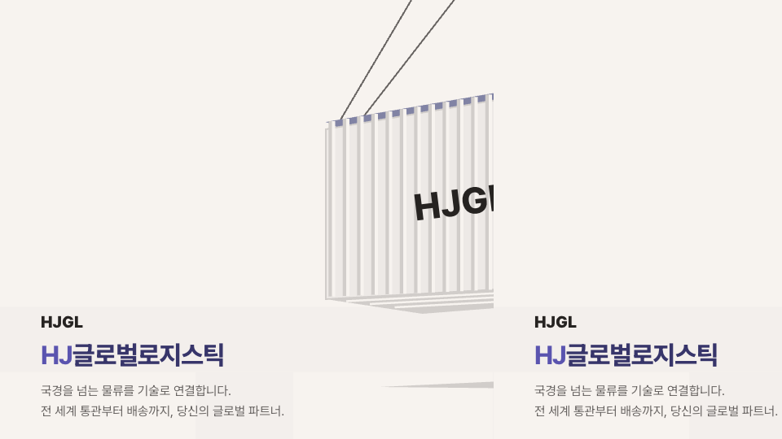
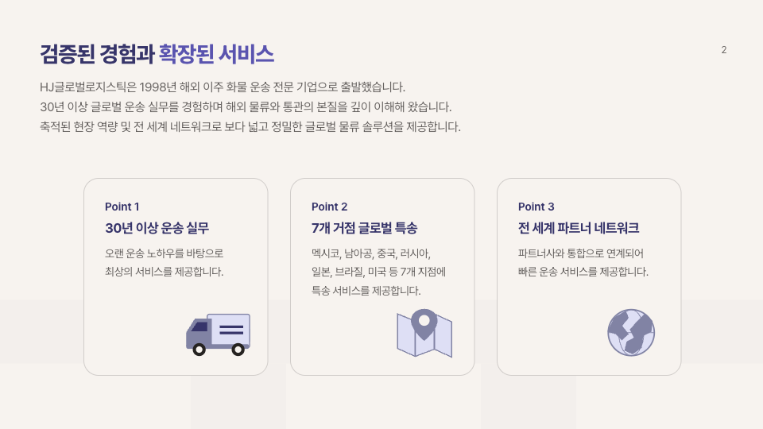
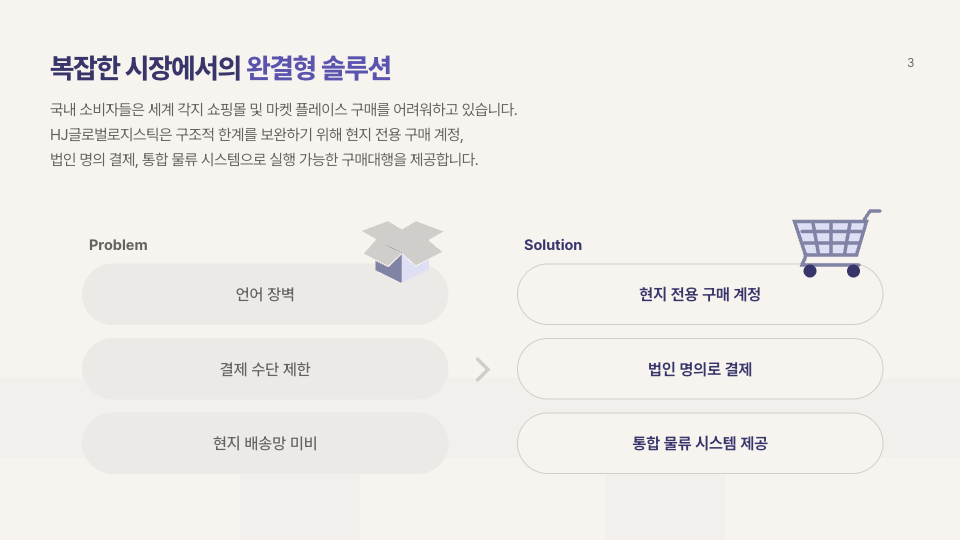
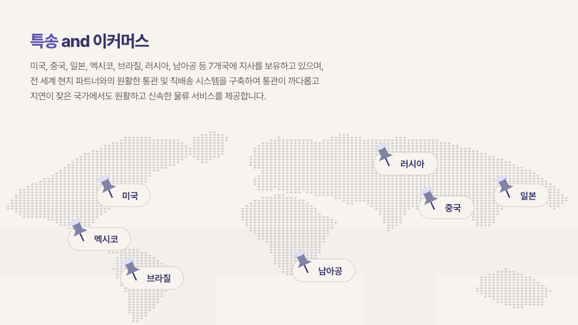
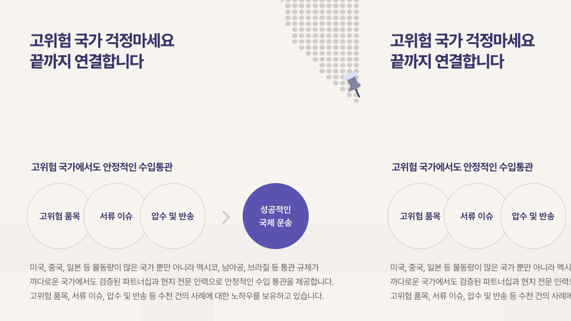
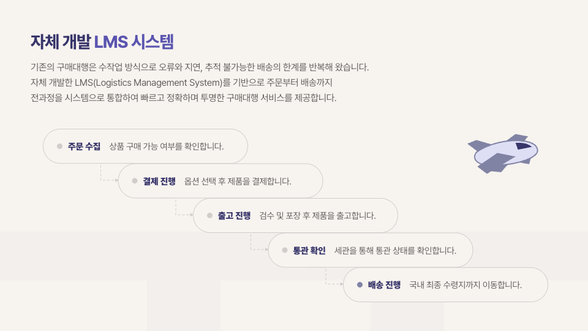

표지
좌하단 기업명과 우상단 공중에 매달린 컨테이너 · 좌하단 기업명과 우상단 공중에 매달린 컨테이너

검증된 경험과 확장된 서비스
상단 세 줄 소개 아래 동일 크기 서비스 카드 3개 · 상단 세 줄 소개 아래 동일 크기 서비스 카드 3개

복잡한 시장에서의 완결형 솔루션
Problem과 Solution의 3행 알약형 항목을 좌우 대응 · Problem과 Solution의 3행 알약형 항목을 좌우 대응

특송 and 이커머스
하단 점묘 세계지도 위 7개 국가 핀 라벨 · 하단 점묘 세계지도 위 7개 국가 핀 라벨

고위험 국가 걱정마세요
우측 미주 지도와 좌하단 중첩 원 3개에서 결과 원으로 연결 · 우측 미주 지도와 좌하단 중첩 원 3개에서 결과 원으로 연결

자체 개발 LMS 시스템
주문부터 배송까지 대각선으로 내려가는 5단계 프로세스 · 주문부터 배송까지 대각선으로 내려가는 5단계 프로세스